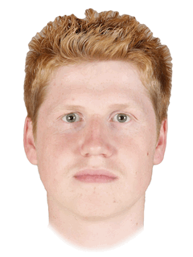

The due date for this homework is Thursday, March 25, 5:00pm.
This homework will improve your skills with nested for loops, functions and modules by having you develop programs that use nested loops to repeat code patterns that are similar but not exactly the same. Your program will uses the cImage module, described in the textbook. Specifically, this assignment is designed to give you practice with the following topics:
To get started, download hw6.zip and unzip the compressed file to reveal the following files:
hw6_images.py this file will be used for all of your codecImage.py an image manipulation module described in the textbook and used by your programimg a folder of images you can use to test your hw6_images.py programhw6.pdf this descriptionNote that all starter files have special headers at the top including form fields that you should fill out before submitting your assignment. Also, do not change the file names as the test program included with this homework (and test programs that we use) assume certain file names.
Your first task is to complete five functions that manipulate digital images.
Open and attempt to run the hw6_images.py file in IDLE. Note that the cImage.py module described in the textbook has been included in the zip file for this homework; the hw6_images.py file uses this module to manipulate and display the images. Note that to close the image window, you can just click anywhere on it.
You will write all of your code for this part of the homework in the hw6_images.py file. Carefully read through all of the comments in the file to make sure you understand what sections of the file you do not need to modify and where your code should go.
We have provided three image file examples that you can work with for this assignment: colgate.gif, rose.gif, and grid.gif. It is strongly recommended that you test your code with multiple images to help ensure that it works for any image. Some code has been added to the main function that will call the various functions you need to write; you are welcome to modify the code in main as you run and test your code.
You will write five functions that take an image object, create a copy, perform a pixel-by-pixel manipulation, and return the manipulated copy. We have provided three helper functions (open_image, display_image, and save_image) that you can use to test your code. You may write any additional helper functions that you find useful. Below there are descriptions and sample images for each of the required manipulations.
The best way to test your image functions is to modify the main function at the bottom of hw6_images.py. You can add calls to the various image functions and use the helper functions to display and save the new/modified image.
The code for an example function, red_filter, is provided in hw6_images.py; images to show the effect of this filter are shown below.


The five functions you must write are as follows:
flip_horizontal“Flip” the image horizontally so that pixels on the left column and right column are swapped, pixels on the second column and next-to-last column are swapped, etc


flip_vertical“Flip” the image vertically so that pixels on the top row and bottom row are swapped, pixels on the second row and the next-to-last row are swapped, etc
to_grayscaleConvert each pixel to grayscale. A pixel will be gray if each of the RGB components are equivalent. You should take the average of the three color components for each pixel, and then set each color component to the computed average value in order to obtain an appropriate grayscale pixel.
scale_upCreate a new image in which each dimension has been doubled. Note that each pixel in the old image will map to four pixels in the new image (draw this if that’s not clear). Each of the four pixels in the new image should have the same color as the pixel from the original image.
scale_downCreate a new image in which each dimension in the new image is cut in half. To do this, scale each block of four pixels in the old image down to one pixel in the new image (again, draw this out if that’s not clear). The RGB components of the resulting (new) pixel should be computed using the average of the corresponding components from the four original pixels.
Note that you’ll need to be careful about images that have an odd number of rows and/or columns: for those images, you should use as many pixels as possible to compute the averaging (it may only be 2 pixels, or in the worst case just 1).


Your second task is to write a function to merge multiple images to create a single average image. This technique is used by researchers in a number of different fields. For example, psychologists have found that people find averaged faces to be more attractive than the individual faces that make up the average. And artificial intelligence researchers use many images to automatically generate new images. For example, see these websites that use AI to generate images of imaginary people, cats, and art.
You are to create a function called merge which takes four image objects as parameters and returns an image object which is the average of those four images. You can assume that all images passed to the function will have the same dimensions. Each pixel color in the merged image should be the average of the pixel colors at that position in the four given images.
Note that averaging four pixels to create one is exactly what you have to do when scaling down an image with the scale_down function. You should be sure to have a helper function that accepts four pixel objects and computes and returns a new (averaged) pixel and use that function in both your scale_down and merge functions. Don’t copy-paste the code!
For example, given the following four faces:
 
This averaged face is created:
Note: You can modify the main function to display the merged faces, but you will not be able to save the merged faces image, because the cImage library only supports saving images with fewer than 256 unique colors.
The above four face images have been included in the img folder provided with this homework. You can download a .zip file containing more faces to try here. These faces come from a dataset released by the team from University of Glasgow. They have a website where you can select photos of people and view the average of those faces.
This problem is based on an assignment created by Evan Peck at Bucknell University.
Challenge problems are entirely optional extensions to the homework. If you complete them successfully, you are rewarded with a sense of accomplishment and a small number of extra points on the homework. They are intended for students who want to explore a little further; only pursue the challenge problem after you have successfully completed the homework.
For this week, the challenge problem is to create your own image manipulation. For inspiration, you can investigate different filters and manipulations in apps or programs that modify photos. You can also create a new image by combining the various functions you’ve written for image manipulation.
Here are some specific ideas you could consider: - A filter that detects edges and either highlights or only draws detected edges. - A kaleidoscope-like filter (think about how to mirror the image in different ways to achieve an interesting affect). - A filter to create a swirl effect in the image. - Some kind of creative color manipulation.
If you choose to do the challenge problem, please write your additional function in the file hw6_images.py. The function should be called challenge, be sure to explain what your function does in the docstring! Have fun!
Please upload only your hw6_images.py file. Remember to complete the questions at the top of the file and that the file you submit must have this exact filename.
Your assignment will be graded on two criteria:
Correctness: Be sure that you run your programs and make sure they work correctly. Be sure to test more than one image to verify that the image transformation works for other inputs, too — you can be sure that we will do that! [85%]
The correctness part of your grade is broken down as follows:
| Category | Portion of grade |
|---|---|
| Part 1 (image manipulation) | 70% |
| Part 2 (image merge) | 15% |
Program design and style [15%]: style and program design become increasingly important the more complex your program becomes. For these programs, adhere to the following guidelines:
Variable names should be meaningful
Programs should contain at least a few descriptive comments. Do not comment every line of code with low level explanations of what each line does. Focus on high level ideas.
Any functions must have appropriate docstrings